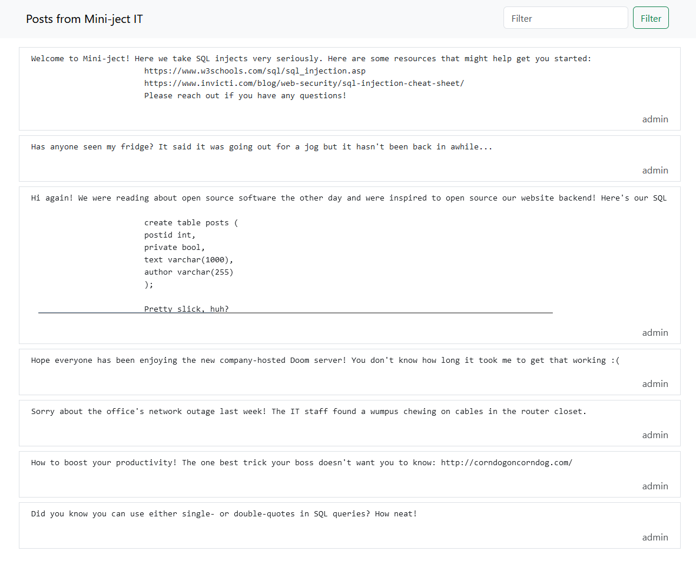

CTF League - mini-ject
Download/Access: http://mini-ject.ctf-league.osusec.org/
Description: I made a private notes app and decided to release it out into the world. It’s my first big project so hopefully nothing goes wrong!
Background on SQL attacks:
- You (the client) <-> (talks to) the webserver <-> (talks to) the database
- The #1 web vulnerability is unsanitized user input
- All HTML/CSS/JS are just interpreted text files
- If you can control what gets put on the page (aka the text file), then you can control how it is interpreted
- Types of attacks include:
- Cross site scripting
- Local/remote file inclusion
- Insecure direct object reference
- SQL injection
- Example of an SQL string: “SELECT user_id FROM users WHERE username = ‘a’ AND password = ‘b’;”
- We can manipulate this in many ways
- SELECT user_id FROM users WHERE username = ‘a’ AND password = ’’ or ‘’; (Note that the user input in this case is “’ or ‘”)
- SELECT user_id FROM users WHERE username = ‘’; – ’ AND password = ‘b’; (Note that the user input in this case is “’; – ‘”)
Challenge 1
Other than the background info on SQL attacks (thus we already know it is an sql injection attack), we are simply given this website and told to hack into it.
So how do we do this?
Luckily we are given lots of useful information.
Firstly, here are the websites listed for SQL injection:
- https://www.w3schools.com/sql/sql_injection.asp
- https://www.invicti.com/blog/web-security/sql-injection-cheat-sheet/
Secondly, we are given the exact structure of the table used in one of the posts!
create table posts (
postid int,
private bool,
text varchar(1000),
author varchar(255)
);
This is very useful information…
Now, let’s try and understand how exactly we form an SQL query, so we can know how to exploit it.
Using the top exploited example (SELECT user_id FROM users WHERE username = ‘a’ AND password = ’’ or ‘’), we can assume that SELECT is somewhat equivalent to “retrive this from the database”, user_id is an attribute, FROM users is the table we are selecting from, WHERE username = ‘a’ (and password = ‘b’) being what we are looking for, and it is useful to note that boolean logic does work in SQL. Another thing of note from the second exploited example is the “– " which is a single line comment in SQL (you can get that from either looking it up or going to the resources above).
From this knowledge, we can try to guess what the SQL query might look like in the website.
Since we are looking at posts, we can assume the beginning of the query that the backend is doing looks something like: SELECT FROM posts;
Then we consider the filter button: SELECT FROM posts WHERE text="<user_input>"
Lastly, there is a weird boolean in the table structure: private bool. This seems like something to add to our query: SELECT FROM posts WHERE text="<user_input>" AND private=false;
So, how do we exploit this?
First, we need to close out the first double quote. Current user input: "
Then, we need to squeeze in a true OR statement. We do this so that instead of just selecting no text (empty quotes), it selects all the text. This works because if one side of an OR statement is true, then the entire statement is true. Thus, instead of looking for just empty text, it looks for everything.
One always true statement we can put on the other side of the OR is “"=””. Essentially, this is saying that an empty string is equivalent to an empty string, which is always true. So, current user input: " or ""=""
Lastly, we need to be able to get rid of all the text that comes after our query. Mainly the “AND private=false;”. We can do this by adding a single line comment and the end of our input. Note that a space is needed after the comment in order to work properly.
In the end, our user input will look like this: " or ""="" --
And there’s our flag!
osu{youweresupposedtodestroytheinjectnotjointhem}